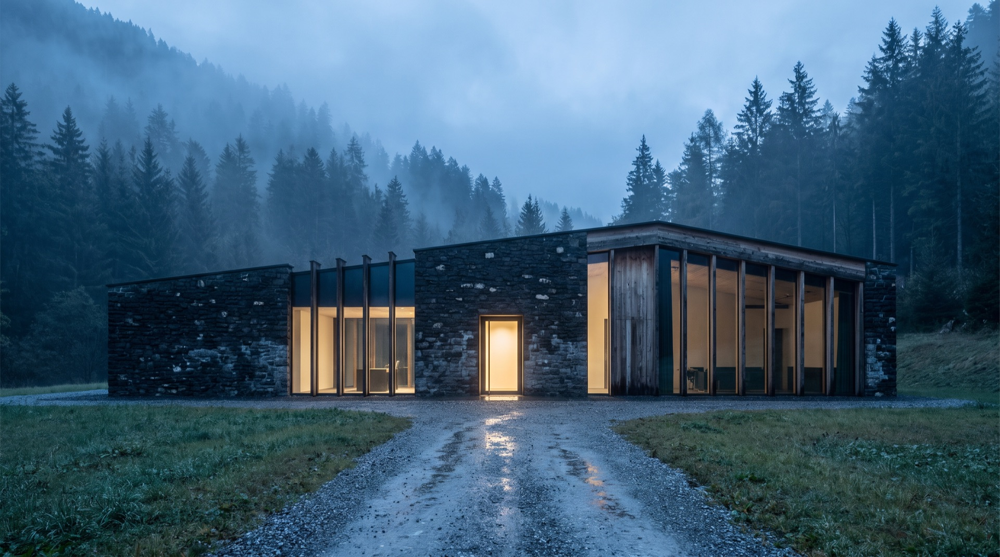
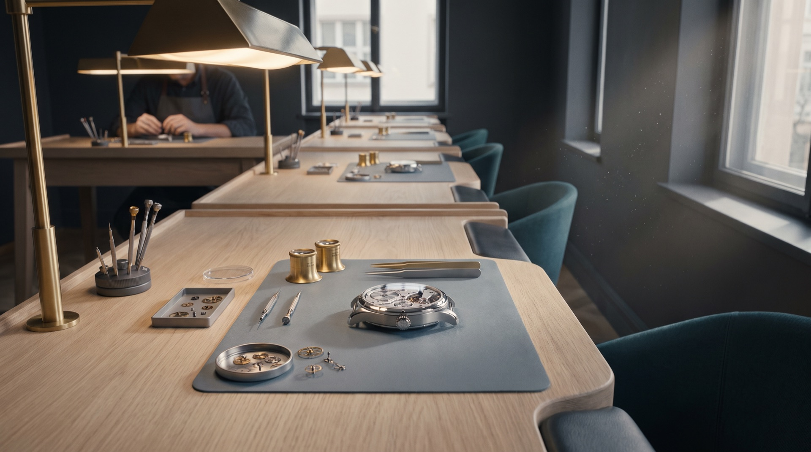
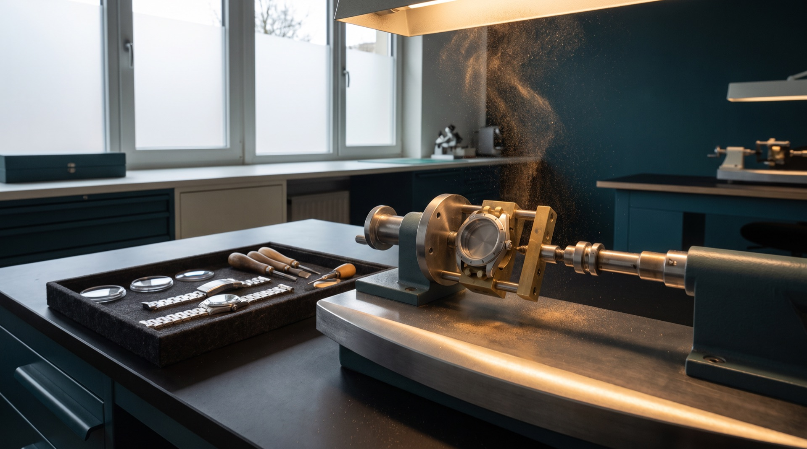
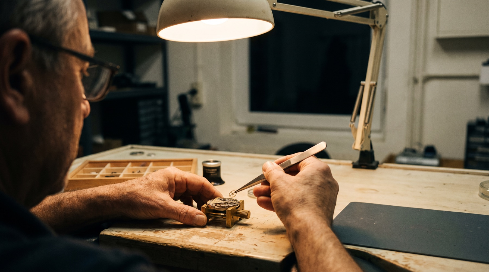
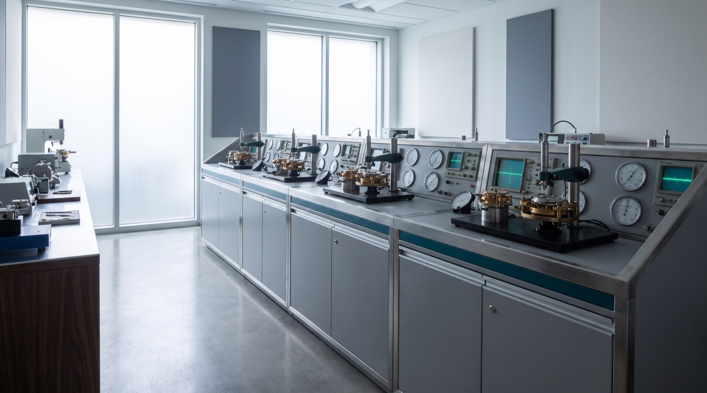

The Manufacture
One building.
Everything happens inside it.
Stone and glass at the head of a valley in the Vallée de Joux. Built 2016. The movement, the case finishing, the dials and the regulation all happen inside it. So does every service the watch will need for the rest of its life.
Eleven people work here. Four of them are watchmakers. Between them the year ends at nine watches: four Bianco, three Notte, two Terra.
Route du Lac 9, 1347 Le Sentier. Watches are sold by introduction at four boutiques, or by writing here.

The building
Five operations, one address
Movement, case finishing, dials, regulation, service. Those five, and none of them anywhere else.
Calibre M9 is designed and made here: 214 parts, 27 jewels, 30.4mm across and 4.2mm thick. Cases are cut from a single billet of 316L and finished by hand. Dials are turned, grained and lacquered here too.
The last of the five is service, which means the building keeps working on watches it has already sent out.
| Movement | Calibre M9, designed and made here |
|---|---|
| Case finishing | One billet of 316L, brushed and polished by hand |
| Dials | Hand-turned guilloché, graining, lacquer |
| Regulation | 15 days, five positions, two temperatures |
| Service | For as long as the watch exists |

The people
Eleven. Four are watchmakers.
A movement is not passed along a line here. It stays on one bench, with one person, until it is finished twice.
The watchmaker builds all 214 parts into a running calibre, takes the whole thing apart again, and builds it a second time. The second build is the one that goes into a case. Two full builds for every watch that leaves the building.
Their mark is engraved on the underside of the balance bridge, where the next watchmaker to open the movement will see it and nobody else will. The certificate carries the same mark, so the owner has it in writing without ever opening the watch.
| People | 11 |
|---|---|
| Watchmakers | 4 |
| Watches a year | 9 |
| Parts in a movement | 214 |
| Builds per movement | 2 |
| Days on test | 15 |

Where the name comes from
Nine years before the first watch
Meridian Nine was founded in 2016. The first watch left the building in 2025.
Nine years went into one calibre, one case and three dials before anything was sold. The building went up at the start of that, not at the end of it. The name is that interval.
The pace did not change once the first watch was cased. The same work takes the same time, and the year still ends at nine.
| 2016 | Founded. The building goes up at the head of the valley, in stone and glass. |
|---|---|
| 2025 | The first watch leaves the building. |
| Between them | Nine years |

Afterwards
The building sees the watch again
Service is the fifth operation, and it is the one that never finishes.
Every seven years, or sooner if the rate has drifted outside tolerance, a watch comes back to these benches. Turnaround is 10 to 14 weeks. Any service that runs past six weeks comes with a loan watch.
Servicing is priced into the watch rather than invoiced afterwards, and it does not stop with the first owner. The measured rate from the original 15 days stays on file here, so a watchmaker opening the movement in 2032 can see what it did in 2025.
| Interval | Every 7 years, or sooner if the rate drifts |
|---|---|
| Turnaround | 10–14 weeks |
| Loan watch | Offered for any service over 6 weeks |
| Cost | Included, for the life of the watch |
| On file | Measured rate, watchmaker's mark, date cased |
Nine a year
The number is a consequence
Nine is not a ceiling set to make the watches harder to get. It is what falls out of the way the building works.
One watchmaker to a movement. Two builds each. Fifteen days on the timing machine before casing. Four watchmakers in the room. Run those numbers across twelve months and the answer is nine. Making it ten means changing one of them.
So the nine are spread as four Bianco, three Notte and two Terra. Most years they are spoken for by March. There is no paid priority list. There is no second model, and no plan for one.
The rest of it is in the movement.
214 parts and 15 days, or the three dials they end up behind.